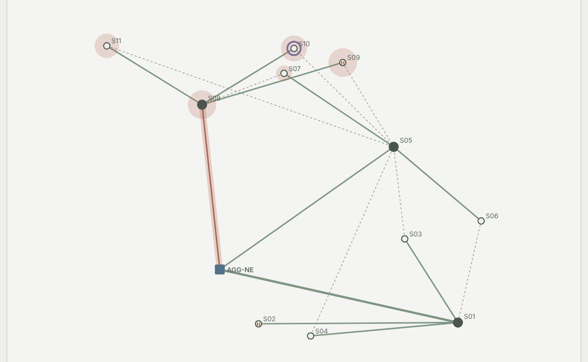
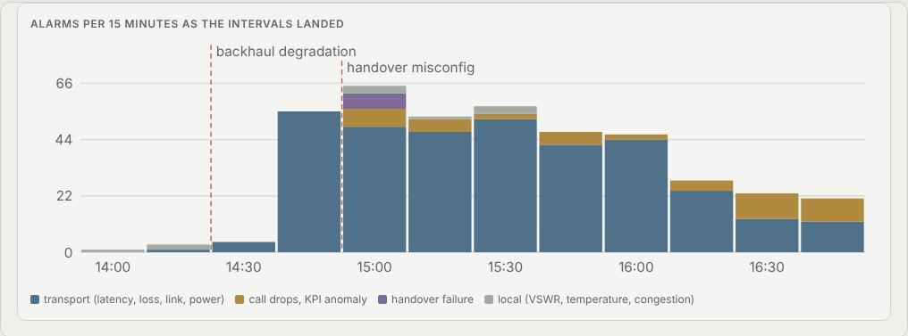
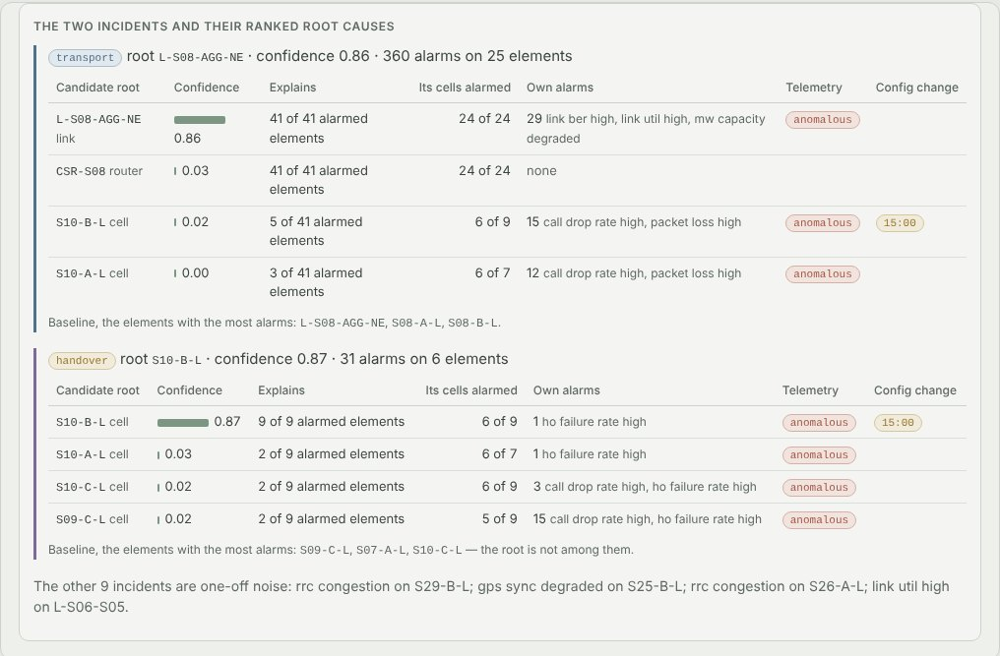
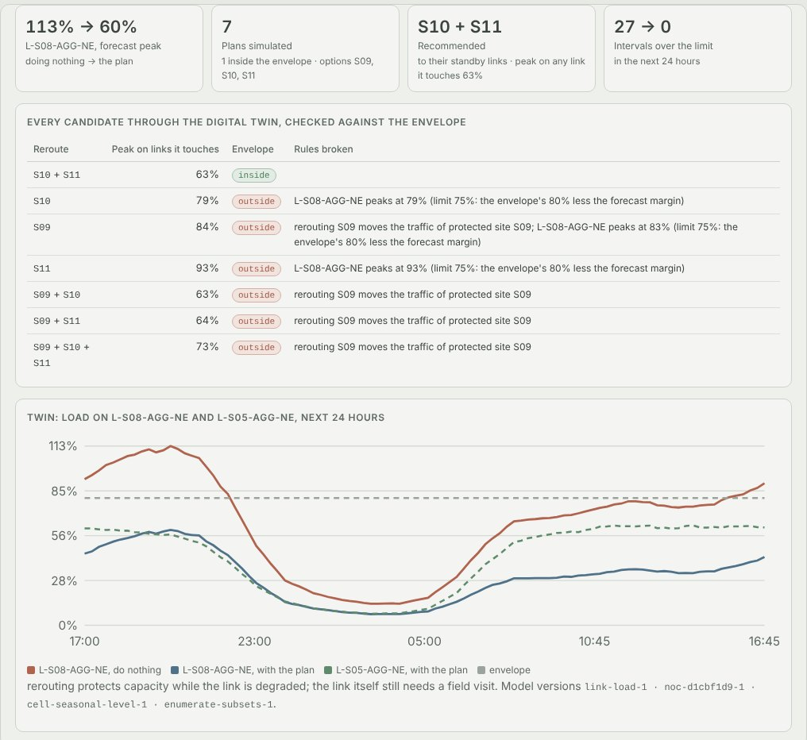
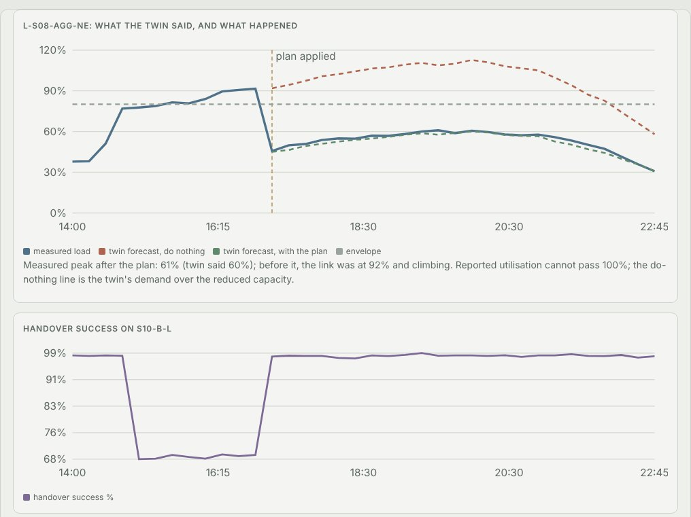

Python · Alarm correlation · Digital twin · 2026-10
Which Link Is Behind Four Hundred Alarms?
Self-healing for an invented metro radio network: a microwave backhaul degrades and a bad change breaks handovers, 403 alarms become 11 incidents with the degraded link and the changed cell ranked first, the forecast says the link will hit 113% at the evening peak, the digital twin finds the one reroute inside the policy envelope, a second person approves it, and the link peaks at 61% where the twin said 60%.

Built from a written blueprint as one vertical slice. The network is simulated: sites, cells, links, traffic, counters and alarms come from a generator in the repository, and the demo's faults are injected by telling the generator about them, which is what lets every incident and ranking be checked against the truth. The digital twin is the service's own model; the generator then shows what really happened. No operator data. Not built: a temporal graph neural network, bounded automation, vendor connectors, Kafka, ClickHouse, Neo4j, Kubernetes, single sign-on.
01 — The problem
When a microwave hop between a hub site and the network degrades, every cell behind it starts to complain at once: latency, packet loss, dropped calls, each one flapping across its threshold minute by minute. A network operations centre sees hundreds of alarms and has to find the one link behind them, while a quieter problem (a bad configuration change, a cell that has stopped carrying traffic without raising anything) gets lost in the noise. Then the fix is a change to a live network, at the worst moment, with the evening busy hour coming. Can software turn the storm into one incident with its cause named and the evidence shown, say whether the link will cope tonight, find a reroute that provably stays inside the operator's rules, and still make a person approve it?
Blueprint 4 of twenty in a fourth build book, built as its demo scenario end to end.
02 — What I built
A Python service on PostgreSQL with a background worker and a web page, started by one docker compose up.
- A simulated metro: 44 sites in four clusters, 264 cells, 74 fibre and microwave links with standby paths; traffic with a daily and weekly shape; vendor alarms checked minute by minute; faults that run down the topology.
- Alarm correlation on the topology, as alarms land, with every incident's candidate roots ranked on their evidence.
- Anomaly detection per cell against its own normal for the day and the quarter hour, which finds the failures that raise no alarm.
- A traffic forecast per cell rolled up onto every link, and a digital twin that runs reroutes over it.
- A policy envelope checked when a plan is recommended, proposed and approved, and a second person before anything changes.
03 — How it was built
- 01
A network whose faults run down the topology
Hub sites sit on fibre or microwave to an aggregation router, tail sites on microwave behind the hubs, and some sites have a standby hop to another hub. Every 15 minutes each cell and link reports its counters, and the elements raise vendor alarms on thresholds checked minute by minute, so a reading near a threshold flaps. A degraded microwave link loses capacity and drops packets for every cell behind it; a site without mains power lasts an hour on battery; a wrong neighbour table makes handovers into a cell fail. Four weeks is 6.8 million counter values and 37 faults, every one fixed before the demo.
cap[i] *= 1 - (1 - f.get("cap_factor", 1.0)) * ramp # the link loses capacity ... ber[i] += f["loss_pct"] * ramp # ... and drops packets site_loss = 100 * (1 - np.exp(M @ np.log(np.maximum(1 - loss_l / 100, 1e-9)))) - 02
What can explain an alarm
The correlator only needs one piece of domain knowledge: which elements could have caused an alarm. A transport alarm is explained by its element or anything upstream of it on today's routing; a handover alarm by its cell or the neighbour it fails towards; congestion or a hot board only by its own cell. As alarms land, each joins an open incident whose root explains it; the rest are covered greedily by the element that explains the most alarmed elements while leaving the fewest of its own cells silent.
cov = [u for u in us if e in u["ex"]] gain = len(cov) - (LAMBDA * _silent(topo, e, cov, alarmed_cells) if len(cov) > 1 else 0) - 03
Ranking the root with its evidence
Topology alone cannot tell a degraded link from the router at its near end: both explain the same cells. So every candidate is also scored on its own alarms (a mains failure or a microwave downshift names a cause; a lost signal is a symptom), its own telemetry, a configuration change just before the incident, and whether it alarmed first. On three held-out metros the true element was in the top three for 99% of 135 faults; the most-alarmed element, usually a flapping cell, for 46%.
f = {"topology": cov * spec, "own_cause": float(own_cause), "own_symptom": float(own_symptom), "anomalous": float(anomalous), "config_change": float(bool(changed)), "first": float(first)} - 04
Learning normal without learning the faults
The first anomaly detector flagged busy cells every afternoon. Their busy-hour congestion alarms had been dropped from the training data as if they were faults, so their baseline was learned from quiet days only. Normal is now learned from intervals with no fault alarm on the cell, its neighbours or anything upstream, per day type and quarter hour, and only harmful directions count. It finds what thresholds cannot: 9 of 9 sleeping cells against none.
for t, e, typ in alarm_rows: if t0 <= t < t1 and e in ei and family(typ) != "local": # congestion is normal, not a fault A[t - t0, ei[e]] = True - 05
A plan the envelope allows
For a degraded link, every subset of the reroutes behind it goes through the twin over the next 24 hours: the cell forecast summed along each site's new path, over each link's measured capacity. The envelope is declared per operator: links a plan touches under 80% less a 5-point forecast margin, at most three changes, never move a protected site. In the demo one plan of seven passes; the obvious one, rerouting everything, moves a hospital.
lim = envelope["max_link_utilisation"] - envelope.get("forecast_margin", 0.0) watch = affected_links(net, actions, current_rerouted) - 06
A second person, then the change
A plan is a proposal: the policy engine checks it on a fresh forecast when it is proposed and again when it is approved; the engineer who proposed it cannot approve it, a NOC manager can, and only then does the change orchestrator apply it from the next interval and log every configuration change against the plan.
if d["proposed_by"] == ctx.actor_id: raise Problem(403, "proposer_cannot_approve", "a change plan needs a second person")
04 — Results
The demo. The backhaul degrades at 14:30 and a bad change hits cell S10-B-L at 15:00; alarms per quarter hour as they landed:

403 alarms became 11 incidents. The two that matter, with every candidate root's evidence:

The forecast puts the degraded link at 113% at 20:00; seven reroute plans through the twin, one inside the envelope:

Approved by a second person and applied at 17:00; the evening that followed:

On three held-out metros (42 faults each):
| System | Baseline | |
|---|---|---|
| Alarm reduction, alarms caused by faults | 46–79:1 | 3.7–5.2:1 de-duplication |
| Alarm reduction, all alarms | 4.7–7.2:1 | |
| Root cause in the top three | 99% of 135 | 46% most-alarmed element |
| Anomaly detection, F1 | 0.964–0.968 | 0.867–0.921 static thresholds |
| Sleeping cells found | 9 of 9 | 0 of 9 |
| Traffic forecast per cell, WAPE | 0.079–0.080 | 0.105–0.106 seasonal naive |
| Capacity plans inside the envelope, real traffic | 17 of 17 | rerouting everything moved a protected site in 2 |
Telemetry processing ran at 21.8 ms per interval (p95) in the live path, against the blueprint's 3 seconds.
Honest limits. The blueprint's 20:1 alarm reduction holds on what faults cause, not over all alarms: 22–30% of the raw alarms are noise with no fault behind it and stay one incident each. Grouping alarms by site also compresses storms (35.5–51.9:1), less cleanly and without naming a cause. The anomaly detector's lead is in silent faults, and a per-feature z-score does nearly as well as the covariance. The forecast beats last week per cell but not at a link's busy-hour peak. The plan moves the fewest sites, so the cells it leaves behind keep the degraded link's packet loss until a field visit. A learned ranker on the same evidence did as well as the hand-set weights (100% in the top three against 99%), which is why no graph neural network was built. Everything here is a simulator.
Checks. 13 tests, including: a degraded link impairs only the cells behind it and a power outage darkens exactly the sites behind the site, a reroute moves load without changing the traffic, one storm becomes one incident ranked at the link, a sleeping cell is flagged while static thresholds stay silent, the optimiser never proposes a plan that moves a protected site, a sample or alarm that is malformed, unknown, duplicated or out of time is refused with its reason, a proposer cannot approve, and one operator cannot see another's network, in the API or in the database. The Docker stack was run end to end.
05 — What I'd do next
- Bounded automation for the plans with the most margin, once enough approved plans have stayed inside the envelope on real traffic.
- An optimiser objective that weighs the packet loss left on a degraded link against the risk of each extra change, rather than only the fewest changes.
- Learning the ranking weights from each operator's closed tickets, the one place the evaluation found that learning helps.